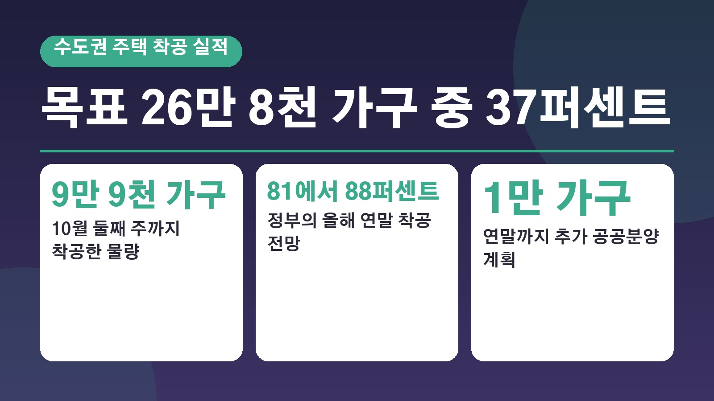
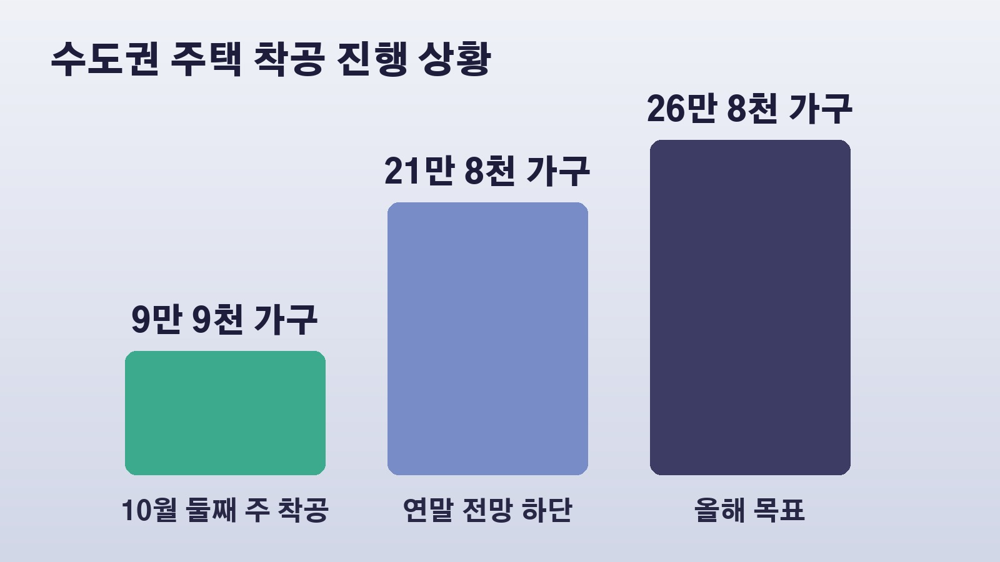
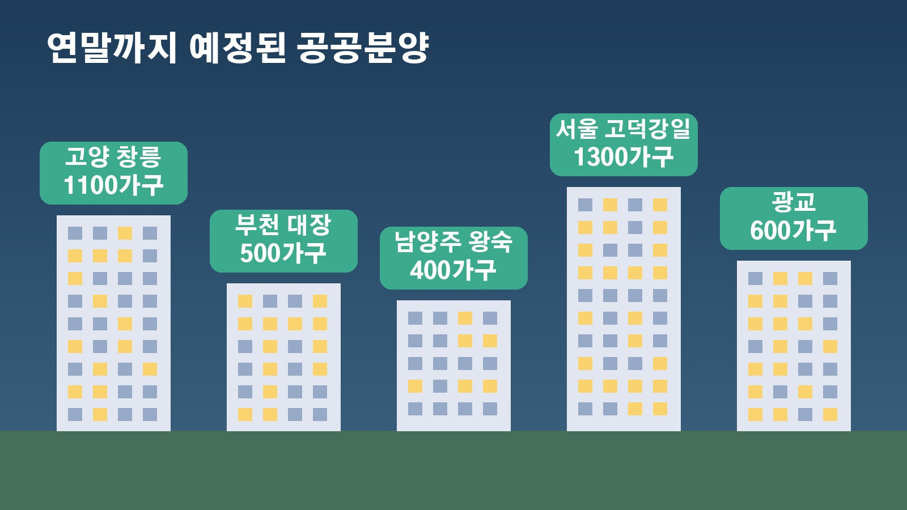

수도권 주택 착공 목표 26만 8천 가구 중 37퍼센트, 정부가 연말 전망을 81에서 88퍼센트로 낮춘 속사정

집값과 전월세 걱정 때문에 정부가 약속한 공급이 정말 이뤄지고 있는지 궁금하신 분들 많으시죠. 마침 정부가 첫 주택공급 정례브리핑을 열고 올해 수도권 착공 실적을 숫자로 공개했어요. 목표 대비 지금 어디까지 왔는지, 왜 연말 전망을 목표보다 낮게 잡았는지, 그리고 무주택자와 세입자가 연말까지 눈여겨볼 일정은 무엇인지 차례로 정리해 볼게요.
올해 목표 26만 8천 가구, 지금까지 착공은 9만 9천 가구
국무조정실과 국토교통부는 10월 16일 첫 주택공급 정례브리핑에서 올해 수도권 주택 착공 목표가 26만 8천 가구이고, 10월 둘째 주까지 9만 9천 가구 이상을 착공했다고 밝혔어요. 목표의 약 37퍼센트입니다.
이 가운데 공공주택은 약 1만 6천 가구였고, 고양 창릉과 인천 계양에서 각각 2300가구, 하남 교산과 남양주 왕숙2에서 각각 1100가구 등 3기 신도시에서만 7300가구가 착공됐어요. 다만 민간 실적은 8월 말까지 집계한 숫자라서 실제 착공량은 이보다 더 많을 수 있어요. 정부는 앞으로 한 달에 두 번 공급 실적을 발표하고, 인허가부터 입주까지 상황을 볼 수 있는 디지털 상황판도 만들겠다고 했어요.
연말 전망 21만 8천에서 23만 5천 가구, 목표의 81에서 88퍼센트
정부는 연말까지 예정된 물량을 고려하면 올해 수도권 착공이 21만 8천에서 23만 5천 가구 수준이 될 것으로 내다봤어요. 원래 목표의 81에서 88퍼센트로, 목표를 다 채우기는 어렵다는 점을 스스로 밝힌 셈입니다.

이 전망도 쉽지 않다는 분석이 나와요. 전망의 낮은 쪽인 21만 8천 가구만 채우려 해도 지금까지 착공한 9만 9천 가구를 빼면 남은 두 달 반 동안 약 11만 9천 가구를 더 착공해야 하거든요. 정부는 올해 목표를 공격적으로 세우다 보니 착공 물량이 하반기에 몰려 있다고 설명했고, 앞으로는 물량을 한 해 동안 고르게 나누도록 노력하겠다고 했어요.
달성 여부는 민간 물량에 달렸다
정부가 밝힌 공공주택과 신축 매입, 민간 정비사업의 연내 착공 계획을 모두 더해도 지금까지의 실적과 합치면 약 20만 가구예요. 연말 전망과의 차이인 1만 8천에서 3만 5천 가구는 일반 민간주택 착공으로 메워야 하는 구조입니다. 올해 1월부터 8월까지 민간을 통한 착공이 4만 7천 가구였다는 점을 근거로 정부는 연말까지 이 정도는 가능하다고 보고 있어요.
문제는 민간 공급이 정부 뜻대로 움직이지 않는다는 점이에요. 민간 착공은 계절보다 사업 자금 조달과 공사비 여건에 더 크게 좌우된다는 게 업계의 대체적인 시각이고, 공사비 급등과 역전세 우려로 인허가를 받고도 착공을 멈춘 사업장이 늘고 있다는 지적도 나왔어요. 공공 물량을 맡은 한국토지주택공사의 부채가 지금 173조 원에서 2030년 372조 원까지 늘 것이라는 국정감사 자료도 공개돼 앞으로의 공공 공급 여력에 대한 우려도 커지고 있습니다.
무주택자가 연말까지 볼 공공분양과 임대 일정
정부는 연말까지 1만 5천 가구 이상의 주택에서 입주자를 모집하겠다고 밝혔어요. 공공분양은 3분기까지 1만 4800가구를 공급했고, 연말까지 1만 가구를 더 분양할 계획입니다.

지역별로 보면 3기 신도시에서 고양 창릉 1100가구, 부천 대장 500가구, 남양주 왕숙 400가구 등 약 2천 가구가 나오고, 서울 고덕강일 1300가구, 2기 신도시 광교 600가구도 공공분양이 예정돼 있어요. 공공임대는 과천지식정보타운 1400가구를 포함해 연말까지 5천 가구 이상의 입주자를 모집합니다. 3기 신도시 입주는 올해 12월 인천 계양에서 처음 시작되고, 내년에는 고양 창릉과 부천 대장으로 이어질 예정이에요. 사업지별 구체적인 일정은 정부가 브리핑 자료와 함께 공개한 수도권 주택공급 지도에서 확인할 수 있습니다.
세입자에게 해당되는 계획과 남은 과제
전월세로 사는 분들이 볼 만한 내용도 있었어요. 정부는 올해 4분기부터 내년 말까지 수도권에 공적주택 약 10만 가구의 입주를 추진하겠다고 했습니다. 청년 월세 지원 월 20만 원은 내년부터 소득 기준을 완화하고, 안심전세 앱으로 전세사기 위험을 진단해 주는 서비스도 연내 도입할 계획이에요. 인허가와 금융 지원을 한곳에서 처리하는 통합 주택공급지원센터도 연내 문을 엽니다.
다만 착공에서 입주까지는 보통 몇 년이 걸리기 때문에 지금의 입주 물량 부족이 짧은 기간에 풀릴지는 지켜봐야 한다는 지적이 나와요. 전월세 불안이 가장 큰 곳은 서울인데 착공 실적과 공적주택 입주 물량은 경기도에 몰려 있다는 지적도 나왔습니다. 정부는 3기 신도시 입주가 본격화되는 2028년부터 수급 여건이 크게 나아질 것으로 보고 있어요.
정리하면 올해 수도권 착공 목표 26만 8천 가구 가운데 10월 둘째 주까지 37퍼센트가 채워졌고, 정부는 연말 전망을 81에서 88퍼센트로 잡았으며, 그 달성 여부는 남은 기간 민간 착공 속도에 달려 있다는 이야기예요. 격주로 나오는 정례브리핑에서 실제 착공 속도가 따라오는지 확인해 보시면 됩니다.
참고한 기사: 대한민국 정책브리핑 제1차 주택공급 정례브리핑(2026.10.16), 경향신문 차질 빚는 올 주택공급 목표 물량, 3개월도 안 남았는데 37에서 80퍼센트 가능할까(2026.10.18), 이데일리 마켓인 집 26만8000채 짓겠다더니, 정부 목표 낮추고도 달성 불투명(2026.10.18)
태그
주택공급 수도권착공 주택공급정례브리핑 3기신도시 공공분양 공공임대 인천계양입주 전월세 청년월세지원 국토교통부